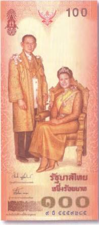
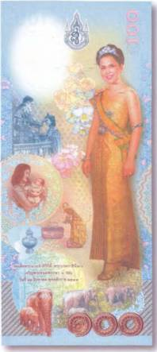
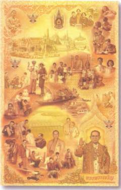
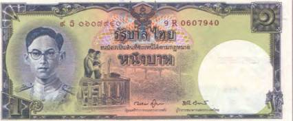
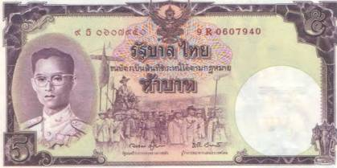
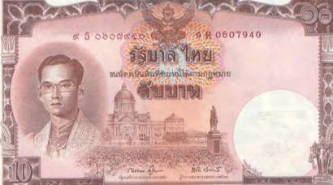

Тайны бумажных денег : Самые-самые!

И среди экзотических банкнот Азии встречаются свои экзоты. Они выбиваются из числа себе подобных «расточительной» пестротой. И это относится не только к ярким цветам, которыми пользуются художники и дизайнеры, создавая их. В не меньшей степени это еще и их нестандартные форматы, а также художественное решение.

4 августа 2004 г. увидела свет юбилейная таиландская купюра в 100 батов, посвященная 54-летию супруги Бумиболя — королеве Сикирит (рис. 225).
Обе стороны банкноты выполнены в вертикальном формате. Уже с момента выхода она считалась одной из красивейших в мире. Кстати, когда держишь ее в руках, нет ощущения, что это настоящие деньги. Так может выглядеть рождественская открытка или блок редких по красоте коллекционных марок. И все же это самые настоящие деньги, которыми можно без ограничения платить по счетам, в магазинах и на рынках. Спрашивается, ну как можно пускать такую красоту в оборот?! Ведь ей самое место в альбоме коллекционера!
На лицевой стороне купюры запечатлена королевская чета. Оба в дорогих, расшитых золотом и украшенных драгоценностями нарядах. Именинница скромно улыбается, а король Таиланда задумчиво глядит куда-то вдаль. Оба излучают жизненную мудрость и простое человеческое радушие. Занятно, что то же самое изображение в 2004 г. можно было повсюду встретить и на улицах страны: на огромных рекламных щитах вдоль дорог, фасадах банков и правительственных зданий, в передовицах газет и на обложках журналов и даже в крохотных домашних молельнях простолюдинов. А вот оборотная сторона того же банковского билета украшена сразу несколькими интересными сюжетами (рис. 226).
Там мы видим именинницу еще совсем молодой. Она бережно держит на руках престолонаследника. Рядом помещен современный портрет королевы в полный рост. Внимательно рассматривая сюжеты, мы можем узнать и о некоторых особенностях дворцового этикета. Например, что королева, оказывая своему царственному супругу почести, обязана преклонять колени перед его троном. А вот нижнюю половину поля банкноты украсил уголок нетронутой природы. Там нарисована группа диких лесных слонов, шествующих по джунглям в поисках корма. Кстати, слоненок-альбинос в самом низу картинки — персонаж вовсе не случайный. В Таиланде есть закон, что как только где-нибудь в стране рождается белый слон, его тут же обязаны отдать в дворцовый зоологический сад, где животное до конца своих дней будет иметь истинно королевский уход и ни в чем не знать нужды. Считается, что белые слоны укрепляют и преумножают счастье тайских монархов.

Казалось бы, разве можно сделать банкноту еще более оригинальную, чем эти 100 батов. Оказывается, можно! К 80-летию короля Таиланда был выпущен еще более уникальный денежный знак (рис. 227).

Банкнота имеет впечатляющий размер (230?147 мм) и с лицевой стороны как будто бы состоит из трех разных купюр. Каждая со своим номиналом — 1, 5, 10 батов. Но вот оборотная сторона у всех трех банковских билетов общая. При этом представляет собой произведение искусства, насчитывающее более 30 самостоятельных сюжетов. Такого мир бумажных денег еще не знал! Интересно и то, что три купюры с лицевой стороны банкноты по своему стилю и декоративному решению подражают тайским купюрам прежних выпусков. Там представлены варианты портретов короля, украсившие выпуски 1948,1955 и 1980-х гг. А вот их сюжеты, как и на оборотной стороне, не обязательно связаны с Бумиболем. На некоторых фрагментах можно увидеть и его царственных предшественников (рис. 228).


